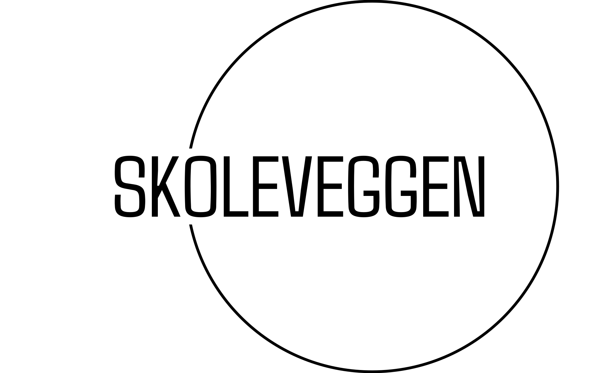

Nettsiden vår er bygd på prinsippene om anonymitet, personvern og ytringsfrihet. Disse verdiene er avgjørende for å fremme åpen og ærlig kommunikasjon i den digitale tidsalderen. Anonymitet fungerer som en katalysator for åpenhet. Ved å tillate brukere å delta i diskusjoner uten å avsløre identiteten deres, skaper vi et trygt rom der enkeltpersoner fritt kan uttrykke seg uten frykt for fordømmelse eller konsekvenser. Dette gir brukerne mulighet til å dele tankene sine, erfaringene sine og meningene sine åpent, noe som fører til mer ekte og mangfoldige samtaler. Vi prioriterer personvern og erkjenner dets betydning i den digitale verdenen. Plattformen vår er utformet for å beskytte brukernes personlige informasjon og sikre at anonymiteten deres forblir intakt. Vi samler ikke unødvendige data eller sporer brukernes aktiviteter, og respekterer retten deres til personvern og anonymitet. Ytringsfrihet er en grunnleggende verdi på plattformen vår. Vi tilbyr et forum der mennesker fra alle samfunnslag kan delta i diskusjoner om et bredt spekter av emner, også de som kan være kontroversielle eller følsomme. Vi tror på dialogens og debattens kraft for å fremme forståelse og drive positiv endring i samfunnet. Oppsummert er nettsiden vår en oase for de som søker meningsfulle samtaler fri for begrensningene til identitet eller frykt. Ved å omfavne anonymitet, respektere personvern og fremme ytringsfrihet, ønsker vi å skape et mer inkluderende og levende online samfunn der alles stemme blir hørt og verdsatt.
